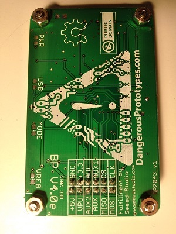

The Bus Pirate is an open source hacker multi-tool that talks to electronic stuff, it speaks many protocols, like UART, 1-WIRE, SPI and so on. You can read more about it here [LINK Here].
One day I saw it from a friend and I immediately was amazed by the open source hardware concept. So I decided to build my very own bus pirate instead of purchasing a prebuilt one to both learn and practice.
The first two boards I ordered from dangerous prototype are version 3.8. and then I successfuly built the board by following the link here [LINK Here], you can also come across other guides over the internet, since a lot people have done it.
however, I don't own a PIC programmer. To program the bus pirate v3.6, I built a avr based PIC programmer (ApProg) following this link [LINK Here], I used a spare atmega32 and it successfully burned the bootloader. Then by booting to the bootloader I flashed the complete firmware without problem.
The next step is to initiate a self test before it can be used. The first time the self test did not pass, so I resoldered some of the pins and the second time it passed. Below are the picutres of the bus pirate v3.8.
bus pirate v3.8 front
bus pirate v3.8 back
After the first success, I further purchased a few more blank PCBS to build some and gift them to friends. After a few days the PCB arrived with version 3.6. They are not much different from version 3.8, the main difference is the usb connecter. I actually prefer mini-usb over micro-usb for robustness. below are the pictures of finished boards. Detailed version regarding version 3.6 can be found here [LINK Here].
bus pirate v3.6 front
bus pirate v3.6 back
After the previous experiences, I then decided to build the version 4. This time I ordered about 10 PCB v4e directly from a PCB board manufacture, 11 have arrived. I constructed the board according to the link here [LINK Here]. The final board is shown below.
bus pirate v4.1e front

bus pirate v4.1e back
To program the bus pirate v4, a PICKit 2 is usually prefered, so I built the PICKit 2 on a blank board following several links here [LINK Here] and here [LINK Here]. Other sources can also be found easily. The picutres below shows the board.
PICKit 2 front
PICKit 2 back
However, at this point I still do not have the programmer to program the onboard PIC18F2550 for the PICKit 2, so a parallel port programmer ART2003 programmer is built following the guide here [LINK Here], it also contains the design of the PICKit 2. The picutres below shows the final result.